Fase 1 · a caverna · a faixa de rocha
21/10/2026 · → a versão atual: a rocha da frente · ← a rodada 1 · as transições recusadas · A sua opção A no jogo: a montanha passa inteira, sem sumir, pular ou esmaecer. A nave fica parada e intocável, e os inimigos escondidos. Nada commitado.
fora )████( salão ……… 12 s ……… salão )████( fora
entrada saída (a mesma faixa espelhada)
A passagem, em velocidade real
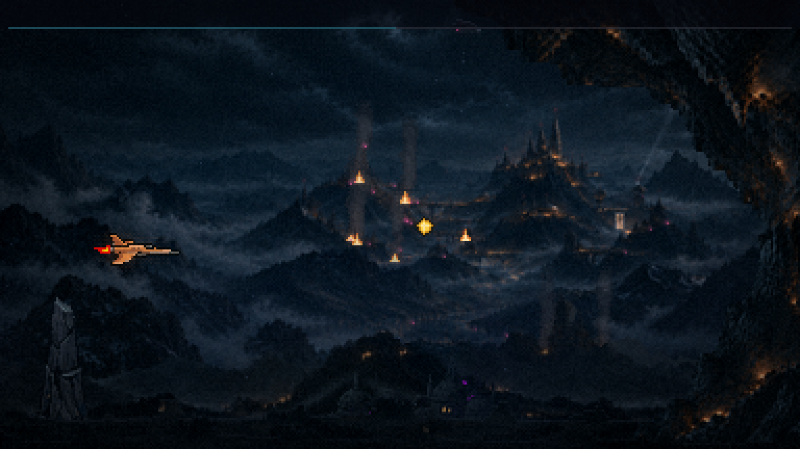
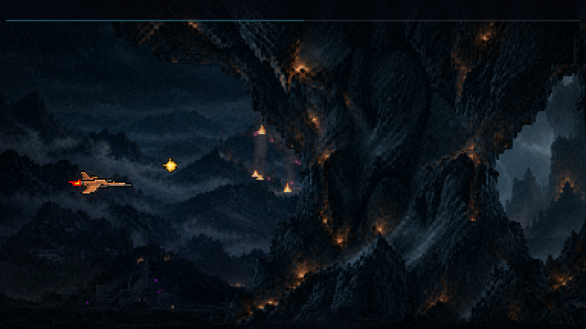
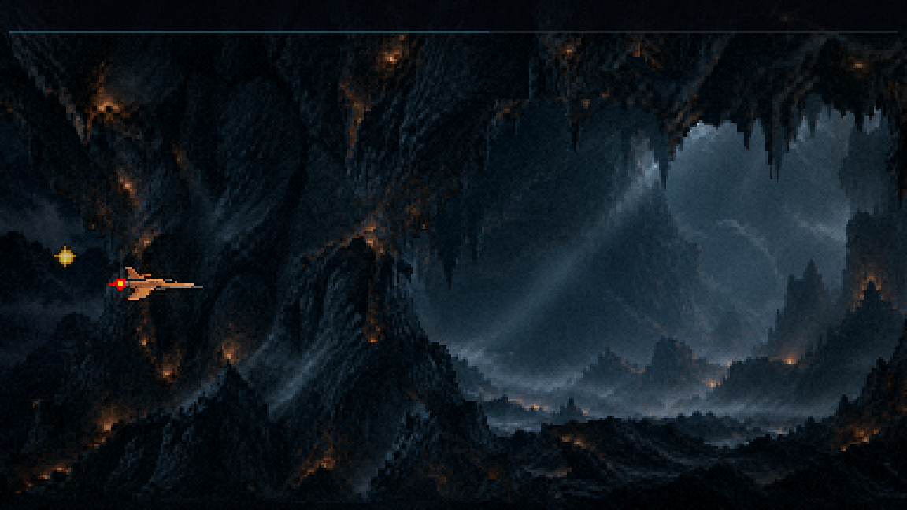
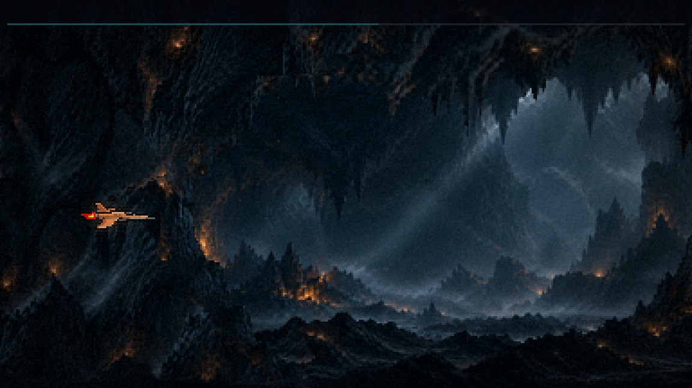
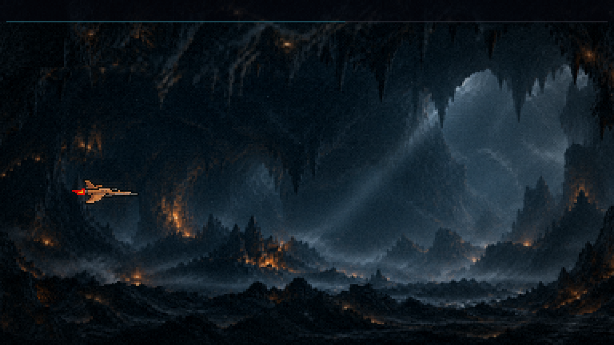
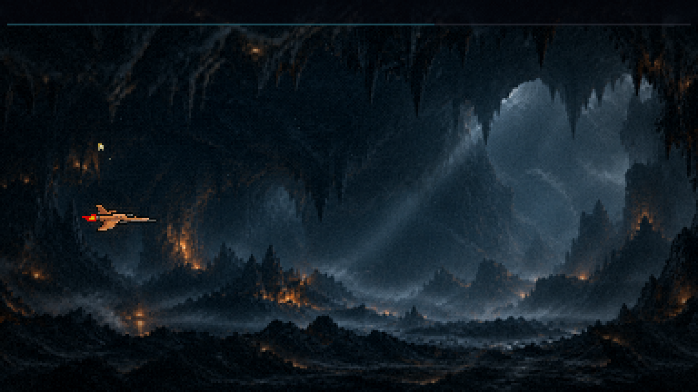
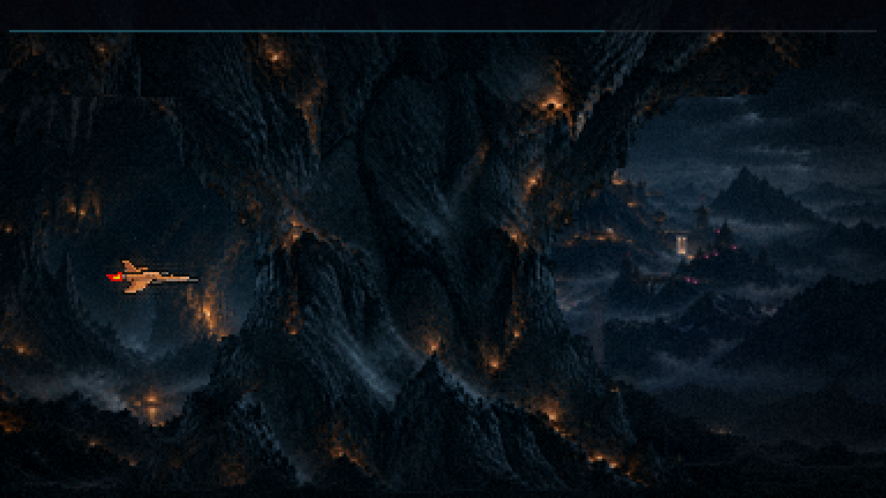
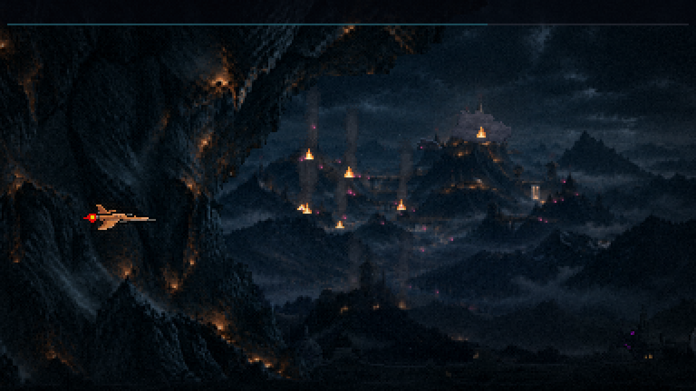
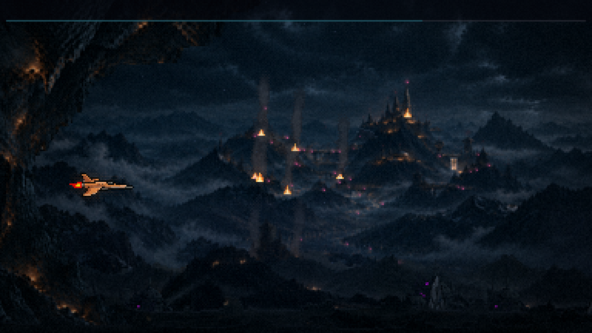
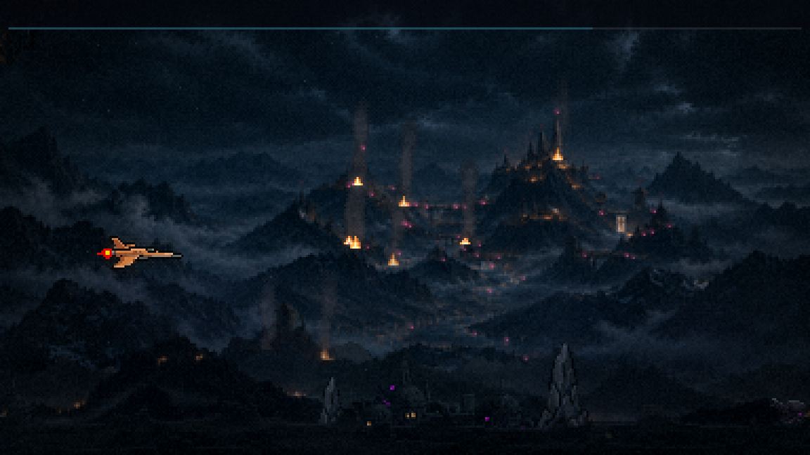
O que está no jogo
- A faixa é o seu portal como está (a boca e a borda ")") com o lado direito recortado pela boca espelhada, a borda "(". Na linha do meio sobram ~100 px de rocha entre as duas bordas: a nave passa ~1,4 s na frente dela.
- A rocha entre as bordas é a sua, sem espelhar. Só a borda "(" e 4 px de rocha vêm do espelho, costurados por uma emenda que acompanha o contorno. Um meio espelhado faria a "borboleta" simétrica.
- Ela nunca abre: anda com o mundo, e o salão começa atrás da rocha, no meio da borda "(". A saída é a mesma faixa espelhada.
- O salão tem 12 s. O teto e o chão mordem só nele; na frente das faixas, nada morde. Dentro, três ondas pequenas de drones (aos 48, 51,5 e 55 s).
- O tom passa para o da caverna quando a nave entra na rocha da entrada, e volta quando ela entra na da saída. A troca leva 1,5 s, o tempo de a rocha passar. O relógio da invasão pausa nesse intervalo (~13,5 s).
- A fase ganhou mais 2 s: o resto do roteiro andou +17 s e o chefão foi para os 85 s. O exterior volta a plantar estruturas logo que o lado de fora reaparece à direita da faixa da saída.
- Um bug da rodada 1, consertado: a mesa de cartas do meio da F1 ("Suprimento encontrado") ficou presa nos 63 s quando a caverna empurrou a fase, e abria no meio do FOGO CRUZADO. Agora ela anda junto e abre aos 80 s, no silêncio antes do chefão, como antes.
- O desfazer, o buraco da saída e as três transições de teste saíram do jogo.
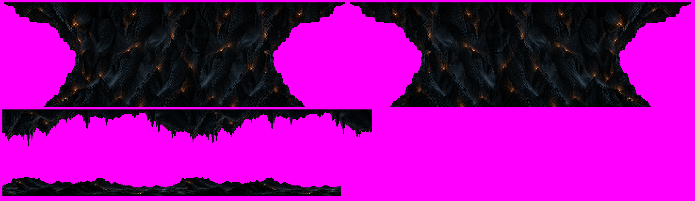
O que você decide
- A faixa: a largura da rocha (hoje ~1,4 s) e se a saída fica espelhada ou ganha outra forma.
- O salão: os 12 s, o teto e o chão.
- A rodada 2: as estalactites e as pontas de rocha como obstáculos, as brasas tremulando e a cadência de tons.